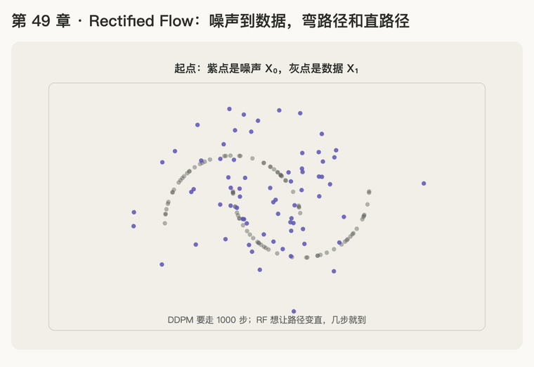

第 49 章 · Latent Diffusion 与 Rectified Flow：在压缩空间里扩散，走直线少走几步
本地运行
git clone https://github.com/wikieden/beyond-transformer
cd beyond-transformer/code/notebooks
pip install jupyterlab torch numpy
jupyter lab ch49_latent_diffusion_flow.ipynb也可以下载后直接用 VS Code 打开 .ipynb 运行。需要 GPU 的章节在 Colab 里选「代码执行程序 → 更改运行时类型 → GPU」。
本章回答：DDPM 直接在像素上加噪去噪，一张 512 × 512 的图有 78 万个数，还要走 1000 步，太贵。Latent Diffusion 怎么先把图压小再扩散？文字怎么"告诉"去噪网络要画什么？Rectified Flow 为什么让噪声到图片走直线，就能几步甚至一步生成？
讲解日期：2026-11-18 · 上一章：第 48 章 DDPM · 下一章：第 50 章 DiT 与 MM-DiT
对应原文：Latent Diffusiontransformer-deep-dive/materials/text/papers/latent-diffusion-2112.10752.txt§3.1 L166–L192（编码器、下采样倍数 f）、§3.2 L199–L230（式 2）、§3.3 L206–L270（交叉注意力、式 3）、§4.1 L290–L336（f 的取舍）；Rectified Flowrectified-flow-2209.03003.txt§2.1 L140–L170（式 1、ODE）、Euler 步 L98–L100、reflow L196–L202、Figure 2 L124–L129
本章缩写：LDM = Latent Diffusion Model（潜空间 / 扩散 / 模型）；latent（潜在的：看不见的压缩表示）；E、D = Encoder、Decoder（编码器、解码器）；f = downsampling factor（下采样倍数）；z：潜空间里的"图"；KL-reg. = KL regularization（KL 正则：让潜空间别太乱）；y：条件（比如一句文字）；\(\tau_\theta\)（tau theta）：把条件变成向量的编码器；φ（phi，读作"斐"）：去噪网络中间某一层的特征；cross-attention（交叉注意力：Q 来自一边，K、V 来自另一边）；RF = Rectified Flow（矫正 / 流）；ODE = Ordinary Differential Equation（常微分方程：给出"每一刻往哪走多快"）；v = velocity（速度）；Euler（欧拉法：按当前速度直线走一小步）；reflow（再流一遍：用自己生成的配对再训一次）。全部缩写见 附录 · 缩写与术语表
讲解
第一步：先压缩，再扩散（2026-11-18）
类比：先画小稿，再上色放大。 画家不会一上来就在大画布上一笔一笔地改，而是先在小本子上把构图定下来，最后再放大、补细节。LDM 也分两段：
- 压缩：训练一个自编码器（第 47 章），编码器 E 把图 x 压成小得多的 z = E(x)，解码器 D 再还原 \(\tilde x = D(z)\)（L176–L180）。
- 扩散：第 48 章那一整套（加噪、猜噪声、1000 步生成）全部在 z 上做。生成完的 z 交给 D 变回图。
下采样倍数 f（L180–L184）：z 的尺寸是 h × w × c，\(f = H/h = W/w\)，取 2 的幂（2、4、8……）。
数字演示：一张 512 × 512 的彩色图：
| 尺寸 | 有多少个数 | |
|---|---|---|
| 像素 x | 512 × 512 × 3 | 786432 |
| 潜空间 z（f = 8，4 个通道，Stable Diffusion 常用的设置） | 64 × 64 × 4 | 16384 |
| 比值 | 小 48 倍 |
去噪网络每一步只处理 1.6 万个数，而不是 78 万个。
为什么不怕丢细节：自编码器负责"人眼看得出的细节"（感知压缩，perceptual compression），扩散模型只负责"画什么、怎么摆"（语义）。原文说潜空间把"高频、看不出的细节"抽掉了，更适合做生成（L232–L236）。
f 怎么选（§4.1，L290–L336）：
| f | 结果 |
|---|---|
| 1、2 | 压得太少，训练慢（和像素空间差不多） |
| 4、8、16 | 速度和画质都好 |
| 32 | 压得太狠，画质掉 |
训练目标（式 2，L199）和第 48 章一样，只是 x 换成 z：
一句话：先用自编码器把图压成小 f² 倍的 z，扩散的加噪、去噪全在 z 上做，生成完再解码回图。
第二步：文字怎么指挥去噪：交叉注意力（2026-11-18）
类比：画师边画边看订单。 去噪网络是画师，文字是订单。画到某个位置时，画师会回头看订单："这里该画什么颜色？"这正是前作第 21 章 decoder 里"译文问原文"的那种注意力：Q 来自正在画的图，K、V 来自文字。
原文（§3.3，L236–L246）：
| 符号 | 意思 |
|---|---|
| y | 条件：一句文字（也可以是分割图、布局……） |
| \(\tau_\theta(y)\) | 把文字编码成 M 个向量（M 个 token），文生图里就是一个 Transformer（L394） |
| \(\varphi_i(z_t)\) | 去噪 U-Net 第 i 层的特征，展平成 N 个位置 |
| 分数表 | N × M：每个图像位置对每个文字 token 打分 |
带条件的训练目标（式 3，L266）只是多给网络一个输入：\(\lVert \epsilon - \epsilon_\theta(z_t, t, \tau_\theta(y))\rVert^2\)，\(\tau_\theta\) 和 \(\epsilon_\theta\) 一起训。
数字演示（编的，d = 2，两个维度分别表示"颜色"和"动物"）：文字"一只 红色 猫"：
| token | K | V |
|---|---|---|
| 一只 | [0, 0] | [0, 0] |
| 红色 | [1, 0] | [1, 0] |
| 猫 | [0, 1] | [0, 1] |
图里两个位置：位置 A 的 Q = [2, 0]（在问"颜色"），位置 B 的 Q = [0, 2]（在问"是什么"）。分数 = Q·K / √2：
| 一只 | 红色 | 猫 | softmax | 输出 = 权重 × V | |
|---|---|---|---|---|---|
| A | 0 | 1.414 | 0 | [0.164, 0.673, 0.164] | [0.673, 0.164]：主要拿到"红色" |
| B | 0 | 0 | 1.414 | [0.164, 0.164, 0.673] | [0.164, 0.673]：主要拿到"猫" |
一句话：去噪网络里加交叉注意力，图像位置当 Q、文字 token 当 K 和 V，每个位置去文字里取自己需要的信息。
第三步：Rectified Flow：噪声到图片，走直线（2026-11-18）
问题：DDPM 的生成路径弯弯曲曲，每步只敢走一点点，要 1000 步。能不能让路径变直？直线只要一步就走完了。
类比：从家到学校。 DDPM 像醉汉走路，每步只敢挪一点、还要随机晃；Rectified Flow 是先在地图上把家和学校连一条直线，然后教一个导航"在任何位置、任何时刻，告诉我往哪走、走多快"。
设定（§2.1，L146–L157）：\(X_0\) 是一团噪声（\(\pi_0\)），\(X_1\) 是一张真图（\(\pi_1\)），时间 t 从 0 走到 1。注意这里和 DDPM 方向相反：t = 0 是噪声，t = 1 是图。
- 随机配一对 (\(X_0\), \(X_1\))，连一条直线：
- 沿这条直线走的速度处处都是 \(X_1 - X_0\)（终点减起点）；
- 让网络 \(v(X_t, t)\) 去猜这个速度（式 1，L157）：
| 符号 | 意思 |
|---|---|
| \(X_t\) | 直线上 t 时刻的位置：t = 0 是噪声，t = 1 是图，中间按比例混合 |
| \(X_1 - X_0\) | 目标速度：一直不变 |
| v | 网络：看着位置和时间，猜速度 |
| ∫ dt | 对 0 到 1 之间所有 t 平均（实际训练时随机抽 t，和 DDPM 随机抽步一样） |
数字演示（一个数）：噪声 \(X_0\) = −1，真图 \(X_1\) = 0.8，抽到 t = 0.25：
- \(X_{0.25}\) = 0.25 × 0.8 + 0.75 × (−1) = 0.2 − 0.75 = −0.55；
- 目标速度 = 0.8 − (−1) = 1.8；
- 网络猜 1.5，loss = (1.8 − 1.5)² = 0.09。
和 DDPM 比，只是把"猜噪声 ε"换成"猜速度 \(X_1 - X_0\)"，同样是均方误差。
一句话：Rectified Flow 把噪声和图连成直线 \(X_t = tX_1 + (1-t)X_0\)，让网络在任一位置、任一时刻猜速度 \(X_1 - X_0\)。
第四步：生成：按速度一步步走（Euler），路径越直步数越少（2026-11-18）
生成就是解一个常微分方程（ODE）\(dZ_t = v(Z_t, t)\,dt\)（L150）：从 \(Z_0\) = 一团噪声出发，每一刻按网络给的速度走。电脑里用 Euler 法：步长 1/N，走 N 步（L98）：
数字演示：接第三步。如果网络在 t = 0.25 的位置 −0.55 猜对了速度 1.8，一步走完剩下的 0.75：−0.55 + 0.75 × 1.8 = 0.8，正好到真图。路径是直的，一步就到。
为什么实际路径会弯：训练时噪声和图是随机配对的，不同配对的直线会交叉。在交叉点上，网络只能给出各条线速度的平均，于是路径在交叉处"改道"、不再交叉，整体变弯（Figure 2，L124–L129；ODE 的解不会交叉，L175）。路径弯了，Euler 一大步就会走偏，需要多走几步。例：数据只有 −1 和 1 两个点，从噪声 0.3 出发，t = 0 时完美速度是两个方向的平均 −0.3，一步走完落在 0，正好在两个点中间、哪个都不是；走 10 步才到 1.0（代码对照里的 generate）。
reflow（L196–L202）：用训好的模型从噪声生成一批图，得到新的配对 (\(Z_0\), \(Z_1\))。这些配对是"顺着流走出来的"，不再交叉；用它们再训一次，路径就变直。原文说 1 次 reflow 后路径几乎是直的，一步 Euler 就能出好图（L99–L100、L133–L134）。
| DDPM（第 48 章） | Rectified Flow | |
|---|---|---|
| 网络猜什么 | 噪声 ε | 速度 \(X_1 - X_0\) |
| 路径 | 弯，还带随机 | 尽量直，确定的 ODE |
| 生成步数 | 1000 | 几步到几十步；reflow 后可以 1 步 |
| 用在哪 | Stable Diffusion 1/2 | Stable Diffusion 3、FLUX（第 50 章） |
一句话：生成时从噪声出发按网络给的速度 Euler 走 N 步；配对交叉会让路径变弯，reflow 用模型自己生成的配对再训一次，把路径拉直，步数就能降到一两步。
动画演示：弯路径和直路径

可交互版：animations/49-latent-diffusion-flow.html（需要用本地服务打开，见 animations/README.md"跑起来看"；滑块：Euler 步数 N 从 1 拖到 30，看生成的点落得准不准）。
怎么看：
- 左边一团噪声、右边是数据（两个弯月），随机配对连直线，很多线互相交叉（第三步）；
- 用"完美速度场"（对这组点精确算出的 v）从噪声出发走，路径在交叉处改道，是弯的（第四步）；
- Euler 步数少时点落不到弯月上，步数多时才准；
- 滑块：N = 1、2、5、30 分别试。
练习与作答记录
题 1（第一步）：一张 256 × 256 的彩色图，f = 4，潜空间 4 个通道。z 是几乘几乘几？比像素少几倍？
题 2（第二步）：接正文的例子，如果位置 C 的 Q = [1, 1]，它对三个 token 的分数各是多少？它更关心哪个 token？（只要说出分数和直觉，不用算 softmax）
题 3（第三步）：噪声 \(X_0\) = 0.5，真图 \(X_1\) = −0.3，t = 0.5。\(X_t\) 是多少？目标速度是多少？
题 4（第四步）：（a）为什么随机配对会让路径变弯？（b）reflow 做了什么让路径变直？
口诀
先画小稿再放大：压成潜空间，扩散在里面；f 取八上下，太小慢、太大糊。
画师边画看订单：图像当 Q，文字当 K 和 V。
噪声连图走直线，网络只猜速度：终点减起点。
欧拉按速走几步，直了一步到；线交改道变弯，reflow 再拉直。
本章复习卡片
必背：B14–B15（B14 潜空间扩散与交叉注意力；B15 Rectified Flow 的直线、速度目标和 Euler 生成）。练习做完后，按答错、卡住的地方再补。
附录 · 延伸阅读
留给以后深入学习用，不影响本章主线。★ 是建议先读的。
推荐阅读
| 读什么 | 读哪里 | 读它为了什么 |
|---|---|---|
| ★ High-Resolution Image Synthesis with Latent Diffusion Models（LDM，Rombach 等 2021） | §3.1–§3.3 L166–L270；§4.1 L290–L336；§4.3.1 文生图 L387–L400 | 本章原文：压缩、潜空间扩散、交叉注意力 |
| ★ Flow Straight and Fast（Rectified Flow，Liu 等 2022） | §2.1 L140–L170；Figure 2 L124–L129；reflow L196–L202 | 直线路径、速度目标、reflow |
| Flow Matching for Generative Modeling（Lipman 等 2022） | 全文（本地没有文本版） | 同时期的另一种写法，和 RF 本质相同 |
| Classifier-Free Diffusion Guidance（Ho & Salimans 2022） | 全文（本地没有文本版） | 文生图里的"指导强度"（LDM 表里的 c.f.g，L370） |
| 本书第 50 章 | SD3 把 RF 和 Transformer 主干结合起来 |
数学原理
- 潜空间大小：\(h \times w \times c = (H/f) \times (W/f) \times c\)，数据量是像素的 \(c/(3f^2)\)。
- 交叉注意力：分数表 N × M（图像位置 × 文字 token），和自注意力的区别只是 K、V 的来源。
- 线性插值：\(X_t = tX_1 + (1-t)X_0\)，\(\frac{dX_t}{dt} = X_1 - X_0\)。
- ODE 与 Euler：\(Z_{t+h} \approx Z_t + h\,v(Z_t, t)\)；路径越直，步长越大误差越小，直线时一步无误差。
- 完美速度场：\(v(z, t) = \mathbb{E}[X_1 - X_0 \mid X_t = z]\)（L396），交叉处取平均，所以会改道。
公式清单
| 公式 | 意思 |
|---|---|
| \(z = E(x)\)，\(\tilde x = D(z)\)，\(f = H/h\) | 压缩和还原 |
| \(L_{LDM} = \mathbb{E}\lVert \epsilon - \epsilon_\theta(z_t, t, \tau_\theta(y))\rVert^2\) | 潜空间里带条件的扩散目标（式 2、3） |
| \(Q = W_Q\varphi(z_t)\)，\(K = W_K\tau_\theta(y)\)，\(V = W_V\tau_\theta(y)\) | 交叉注意力 |
| \(X_t = tX_1 + (1-t)X_0\) | 噪声到图的直线 |
| \(\min_v \mathbb{E}\lVert (X_1 - X_0) - v(X_t, t)\rVert^2\) | RF 训练目标（式 1） |
| \(Z_{t+1/N} = Z_t + \frac{1}{N}v(Z_t, t)\) | Euler 生成 |
代码对照：把本章的数字用代码算一遍
NumPy。代码在仓库本地
beyond-transformer/solutions/chapter-code/ch49_latent_diffusion_flow.py，配套测试tests/test_ch49.py，notebook 在notebooks/ch49_latent_diffusion_flow.ipynb：
bash cd beyond-transformer/solutions/chapter-code uv run python ch49_latent_diffusion_flow.py uv run pytest tests/test_ch49.py
讲义 ↔ 代码：
| 讲义 | 公式 | 写法 | 跑出来 |
|---|---|---|---|
| 第一步 压缩多少 | \((H/f)(W/f)c\) | latent_size(512, 8, 4) |
64 × 64 × 4 = 16384，小 48 倍 |
| 第二步 交叉注意力 | softmax(QKᵀ/√d)V | cross_attention(Q, K, V) |
A：[0.164, 0.673, 0.164] → [0.673, 0.164]；B：[0.164, 0.673] |
| 第三步 RF 训练 | 式 1 | rf_example(-1, 0.8, 0.25, 1.5) |
\(X_t\) = −0.55，目标 1.8，loss 0.09 |
| 第四步 Euler | \(Z + v/N\) | euler(z, v, dt) |
−0.55 + 0.75 × 1.8 = 0.8 |
| 第四步 完美速度场 | \(\mathbb{E}[X_1 - X_0 \mid X_t]\) | perfect_velocity(z, t, data) |
两个数据点 ±1 时，z = 0、t = 0.5 处速度为 0（交叉点取平均） |
| 第四步 步数 | Euler N 步 | generate(0.3, [-1, 1], N) |
1 步落在 0（两个数据点正中间，哪个都不是）；2 步 0.291；10 步到 1.0 |
关键几行：
scores = Q @ K.T / np.sqrt(K.shape[1]) # 图像位置 × 文字 token
out = softmax(scores) @ V # 每个位置从文字里取信息
x_t = t * x1 + (1 - t) * x0 # 噪声和图之间的直线
target = x1 - x0 # 目标速度：终点减起点
z = z + dt * v(z, t) # Euler：按当前速度走一小步
代码里才看得到的 2 件事：
- RF 的约定是 t = 0 噪声、t = 1 图；DDPM 是 t = 0 图、t = T 噪声；SD3 论文又用了"t = 0 是图"的写法。读代码时先看清楚哪头是噪声。
- 完美速度场里有 \(1/(1-t)\)，t = 1 时除以 0；Euler 最后一步只在 t = 1 − 1/N 取速度，不会碰到 t = 1。
自己改一改（不影响练习答案）：
- 把
cross_attention里位置 A 的 Q 放大成 [4, 0]，看它对"红色"的权重是不是更接近 1。 - 用
perfect_velocity和euler从 z = −1 出发，分别走 1 步、10 步，看终点差多少。